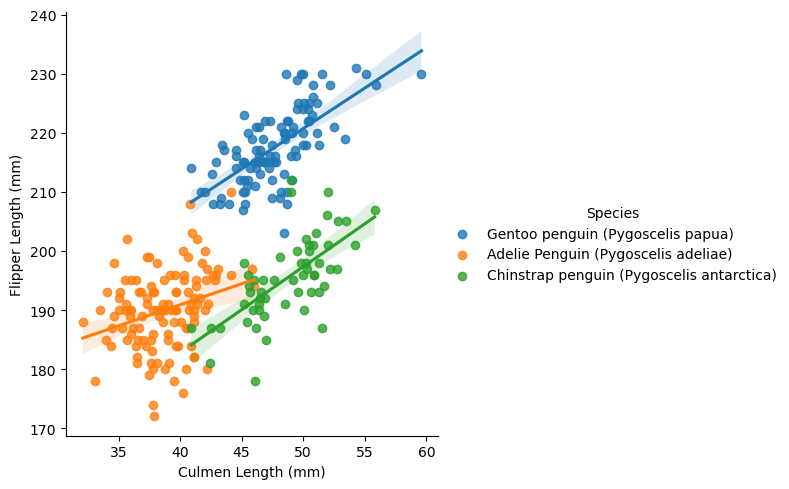
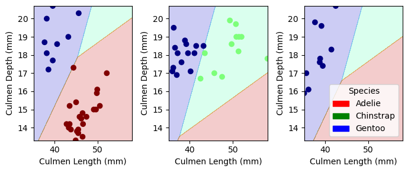
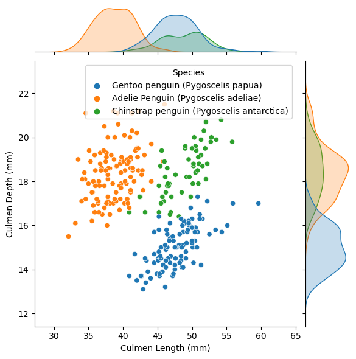

import pandas as pd
import numpy as np
from matplotlib import pyplot as plt
train_url = "https://raw.githubusercontent.com/middlebury-csci-0451/CSCI-0451/main/data/palmer-penguins/train.csv"
train = pd.read_csv(train_url)Explore
I found helpful code and inspiration from the links below. https://seaborn.pydata.org/tutorial/introduction.html https://middlebury-csci-0451.github.io/CSCI-0451/lecture-notes/classification-in-practice.html https://scikit-learn.org/stable/modules/feature_selection.html
Table 1
The table below calculates the average flipper length and body mass for each species of penguin. From the table, we can see that Gentoo penguins appear to have the longest flippers and the greatest body mass. The Adelie and Chinstrap penguins are very close in both flipper length and body mass, with the chinstrip appeaer to be slighly larger in body mass for females where as Adelie are slightly larger in body mass for males. This indicates that aside from Gentoo penguins, it might be difficult to classify the penguins based on flipper length and body mass due to the similarity in numbers between two species of penguins.
train.groupby(['Species', 'Sex'])[['Flipper Length (mm)', 'Body Mass (g)']].aggregate([np.mean,len ]).round(2)| Flipper Length (mm) | Body Mass (g) | ||||
|---|---|---|---|---|---|
| mean | len | mean | len | ||
| Species | Sex | ||||
| Adelie Penguin (Pygoscelis adeliae) | FEMALE | 187.72 | 57 | 3337.28 | 57 |
| MALE | 192.69 | 55 | 4020.45 | 55 | |
| Chinstrap penguin (Pygoscelis antarctica) | FEMALE | 191.55 | 29 | 3514.66 | 29 |
| MALE | 199.67 | 27 | 3936.11 | 27 | |
| Gentoo penguin (Pygoscelis papua) | . | 217.00 | 1 | 4875.00 | 1 |
| FEMALE | 212.93 | 42 | 4677.98 | 42 | |
| MALE | 221.46 | 54 | 5502.31 | 54 | |
Table 2
The next table groups the penguins by island and counw how many of each species are at each island. We can see from the table that Adelie penguins occupy all three islands, whereas Chinstrap penguins only occupy the Dream island and Gentoo penguins only occupy the Biscoe island. The table indicates that island could be a good qualitative feature to use to classify the penguins.
train.groupby(['Species', 'Island'])['Region'].aggregate([len]).round(2)| len | ||
|---|---|---|
| Species | Island | |
| Adelie Penguin (Pygoscelis adeliae) | Biscoe | 35 |
| Dream | 41 | |
| Torgersen | 42 | |
| Chinstrap penguin (Pygoscelis antarctica) | Dream | 56 |
| Gentoo penguin (Pygoscelis papua) | Biscoe | 101 |
Table 3
The third table shows the average culmen length and culmen depth for each species of penguin broken up by gender. The table shows that Chinstrap and Gentoo penguins have similar culmen length whereas the Adelie penguins have much smaller culmen length. Culmen depth, on the other hand, is very similar between Adelie and Chinstrap penguins, and much smaller for Gentoo penguins. This indicates that together, culmen length and culmen depth can be good indicators of species as a penguin with longer culmen length and greater culmen depth would be classified as Chinstrap, a penguin with llng culmen length and small culmen depth would be classified as Gentoo, and a penguin with short culmen length and large culmen depth would be classified as Adelie.
train.groupby(['Species', 'Sex'])[['Culmen Length (mm)', 'Culmen Depth (mm)']].aggregate([np.mean,len ]).round(2)| Culmen Length (mm) | Culmen Depth (mm) | ||||
|---|---|---|---|---|---|
| mean | len | mean | len | ||
| Species | Sex | ||||
| Adelie Penguin (Pygoscelis adeliae) | FEMALE | 37.10 | 57 | 17.65 | 57 |
| MALE | 40.46 | 55 | 19.12 | 55 | |
| Chinstrap penguin (Pygoscelis antarctica) | FEMALE | 46.42 | 29 | 17.64 | 29 |
| MALE | 51.19 | 27 | 19.30 | 27 | |
| Gentoo penguin (Pygoscelis papua) | . | 44.50 | 1 | 15.70 | 1 |
| FEMALE | 45.60 | 42 | 14.24 | 42 | |
| MALE | 49.59 | 54 | 15.69 | 54 | |
Graph 1
The graph below plots the train data with culmen length on the x-axis, flipper length on the y-axis and is colored by penguin species. The graph then adds a line of best fit for each species. We can see from the graph that Gentoo penguins tend to be found in the middle to upper right quadrant of the graph, indcating greater flipper length and culmen length. Adelie penguins tend to be in the lower right quadrant of the graph indicating smaller culmen and flipper length. The chinstrap penguins tend to be in the middle of the graph showing smaller flipper length, but greater culmen length.
import seaborn as sns
sns.lmplot(data=train, x="Culmen Length (mm)", y="Flipper Length (mm)", hue="Species")<seaborn.axisgrid.FacetGrid at 0x7fc88ebd5400>
from sklearn.preprocessing import LabelEncoder
le = LabelEncoder()
le.fit(train["Species"])
def prepare_data(df):
df = df.drop(["studyName", "Sample Number", "Individual ID", "Date Egg", "Comments", "Region"], axis = 1)
df = df[df["Sex"] != "."]
df = df.dropna()
y = le.transform(df["Species"])
df = df.drop(["Species"], axis = 1)
df = pd.get_dummies(df)
return df, y
X_train, y_train = prepare_data(train)Selecting Features
Below, I use a function from the scikit-learn website. The function, SelectKBest, selects the k best features and removes the rest. I started by using k = 3, as 3 is the number of features we are supposed to use to train our model, however I didn’t get any qualitative features with k = 3. Because of this, I decided to make k larger, and decided to use k = 5. From here, I printed out the 5 best features and saw that the qualitative feature, island was one of the 5 best. For that reason, I decided to use island and my qualitative feature. Next, I had to decide what two quantitative features to use. From my tables above, I decided to start with culmen length and culmen depth due to the unique way to classify the penguins when both features are combined. Additionally, culmen length and culmen depth were both in the k top features.
>>> from sklearn.feature_selection import SelectKBest
>>> from sklearn.feature_selection import f_classif
model= SelectKBest(f_classif, k=5).fit(X_train,y_train)
X_Feature_Names=X_train.columns[model.get_support()]/Users/ceceziegler/opt/anaconda3/envs/ml-0451/lib/python3.9/site-packages/sklearn/feature_selection/_univariate_selection.py:112: UserWarning: Features [9] are constant.
warnings.warn("Features %s are constant." % constant_features_idx, UserWarning)
/Users/ceceziegler/opt/anaconda3/envs/ml-0451/lib/python3.9/site-packages/sklearn/feature_selection/_univariate_selection.py:113: RuntimeWarning: invalid value encountered in divide
f = msb / mswX_Feature_NamesIndex(['Culmen Length (mm)', 'Culmen Depth (mm)', 'Flipper Length (mm)',
'Body Mass (g)', 'Island_Biscoe'],
dtype='object')Fitting my model
I attempted to use many different models from the scikit-learn page, but after fitting them and cross validating, I determined that the LogisticRegression model was the best fit. Below is my models score the first time it was fit, and below that are the scores from cross validating the model 5 times.
from sklearn.linear_model import LogisticRegression
cols = ["Culmen Length (mm)", "Culmen Depth (mm)", "Island_Biscoe", "Island_Dream", "Island_Torgersen"]
LR = LogisticRegression(max_iter=10000)
LR.fit(X_train[cols], y_train)
LR.score(X_train[cols], y_train)0.99609375from sklearn.model_selection import cross_val_score
cv_scores = cross_val_score(LR, X_train[cols], y_train, cv=5)
cv_scoresarray([0.98076923, 1. , 0.98039216, 1. , 1. ])Testing The Model!
Below, I test and cross validate my model on the testing data. The score is printed for both the initial fitting and the cross validating. For all but one score in the cross validating, the model returned a score of 1. This shows that our model was well fitted.
test_url = "https://raw.githubusercontent.com/middlebury-csci-0451/CSCI-0451/main/data/palmer-penguins/test.csv"
test = pd.read_csv(test_url)
X_test, y_test = prepare_data(test)
LR.score(X_test[cols], y_test)1.0from sklearn.model_selection import cross_val_score
cv_scores = cross_val_score(LR, X_test[cols], y_test, cv=5)
cv_scoresarray([1. , 1. , 1. , 1. , 0.92307692])Plotting Decision Regions
https://middlebury-csci-0451.github.io/CSCI-0451/assignments/blog-posts/blog-post-penguins.html#plotting-decision-regions Below, I plot the decision regions for the testing data. The graphs are broken up by the qualitative data, which for me is islands. I used code from the link above. The colors indicate each species, and we can see from the decsion regions that our model sucessfully classified our penguins.
from matplotlib.patches import Patch
def plot_regions(model, X, y):
x0 = X[X.columns[0]]
x1 = X[X.columns[1]]
qual_features = X.columns[2:]
fig, axarr = plt.subplots(1, len(qual_features), figsize = (7, 3))
# create a grid
grid_x = np.linspace(x0.min(),x0.max(),501)
grid_y = np.linspace(x1.min(),x1.max(),501)
xx, yy = np.meshgrid(grid_x, grid_y)
XX = xx.ravel()
YY = yy.ravel()
for i in range(len(qual_features)):
XY = pd.DataFrame({
X.columns[0] : XX,
X.columns[1] : YY
})
for j in qual_features:
XY[j] = 0
XY[qual_features[i]] = 1
p = model.predict(XY)
p = p.reshape(xx.shape)
# use contour plot to visualize the predictions
axarr[i].contourf(xx, yy, p, cmap = "jet", alpha = 0.2, vmin = 0, vmax = 2)
ix = X[qual_features[i]] == 1
# plot the data
axarr[i].scatter(x0[ix], x1[ix], c = y[ix], cmap = "jet", vmin = 0, vmax = 2)
axarr[i].set(xlabel = X.columns[0],
ylabel = X.columns[1])
patches = []
for color, spec in zip(["red", "green", "blue"], ["Adelie", "Chinstrap", "Gentoo"]):
patches.append(Patch(color = color, label = spec))
plt.legend(title = "Species", handles = patches, loc = "best")
plt.tight_layout()cols = ["Culmen Length (mm)", "Culmen Depth (mm)", "Island_Biscoe", "Island_Dream", "Island_Torgersen"]
plot_regions(LR, X_test[cols], y_test)
Final Visual!
Below is a jointplot graph that shows both a scatter plot and bell curves of the distribution for each species regarding culmen length and culmen depth which were the two quantitative features I focused on in my model. We can see from the graphs how the penguin species are very well separated into their own groups based on culmen length and depths which indicates that these were good features to select to train our model on to properly classify penguin species.
sns.jointplot(data=train, x="Culmen Length (mm)", y="Culmen Depth (mm)", hue="Species")<seaborn.axisgrid.JointGrid at 0x7fc890f1ea30>